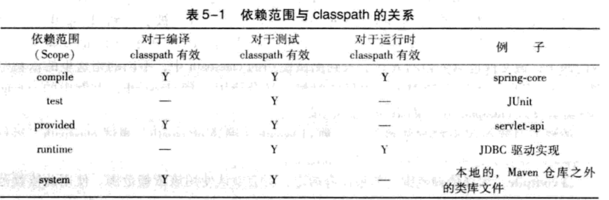
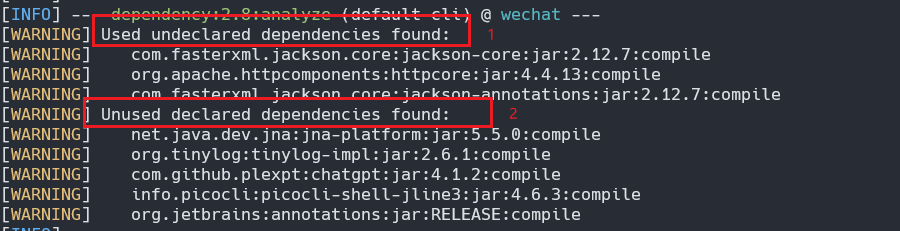
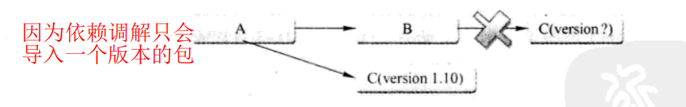
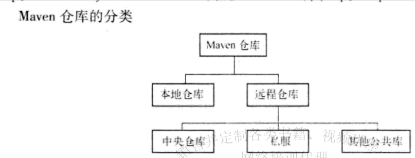
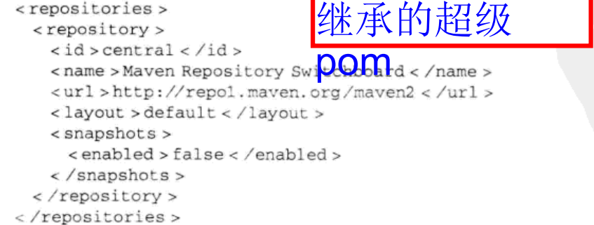

依赖
创建项目
maven archetype:generate
依赖范围
有如下依赖示例：
<dependency>
<groupId>junit</groupId>
<artifactId>junit</artifactId>
<version>4.7</version>
<scope>test</scope>
</dependency>
其中有一个scope标签来声明该依赖的作用范围
首先需要知道，Maven 在编译项目主代码的时候需要使用一套 classpath。在上例中，假如编译项目主代码的时候需要用到 spring-core, 该文件以依赖的方式被引入到 classpath 中。其次，Maven 在编译和执行测试的时候会使用另外一套 classpath。上例中的 JUnit 就是个很好的例子，该文件也以依赖的方式引入到测试使用的 classpath 中，不同的是这里的依赖范围是 test。最后，实际运行 Maven 项目的时候，又会使用一套 classpath, 上例中的 spring-core 需要在该 classpath 中，而 JUnit 则不需要。 依赖范围就是用来控制依赖与这三种 classpath（编译 classpath、测试 classpath、运行 classpath) 的关系，Maven 有以下几种依赖范围：
-
compile: 编译依赖范围。如果没有指定，就会默认使用该依赖范围。使用此依赖范围的 Maven 依赖，对于编译、测试、运行三种 classpath 都有效。典型的例子是 spring-core, 在编译、测试和运行的时候都需要使用该依赖。
-
test: 测试依赖范围。使用此依赖范围的 Maven 依赖，只对于测试 classpath 有效，在编译主代码或者运行项目的使用时将无法使用此类依赖。典型的例子是 JUnit, 它只有在编译测试代码及运行测试的时候才需要。
-
provided: 已提供依赖范围。使用此依赖范围的 Maven 依赖，对于编译和测试 class-path 有效，但在运行时无效。典型的例子是 servlet-api, 编译和测试项目的时候需要该依赖，但在运行项目的时候，由于容器已经提供，就不需要 Maven 重复地引入一遍
-
runtime: 运行时依赖范围。使用此依赖范围的 Maven 依赖，对于测试和运行 class-path 有效，但在编译主代码时无效。典型的例子是 JDBC 驱动实现，项目主代码的编译只需要 JDK 提供的 JDBC 接口，只有在执行测试或者运行项目的时候才需要实现上述接口的具体 JDBC 驱动。
-
system: 系统依赖范围。该依赖与三种 classpath 的关系，和 provided 依赖范围完全一致。但是，使用 system 范围的依赖时必须通过 systemPath 元素显式地指定依赖文件 的路径。由于此类依赖不是通过 Maven 仓库解析的，而且往往与本机系统绑定，可能造成构建的不可移植，因此应该谨慎使用。 systemPath 元素可以引用环境变量，如：
<dependency>
<groupId>javax.sql</groupId>
<artifactId>jdbc-stdex</artifactId>
<version>2.0</version>
<scope>system</scope>
<systemPath>${java.home}/lib/rt.jar</systemPath>
</dependency>
- import（Maven2.0.9 及以上）：导入依赖范围。该依赖范围不会对三种 classpath 产生实际的影响。

传递性依赖和依赖调解
Maven 会解析各个直接依赖的 POM, 将那些必要的间接依赖，以传递性依赖的形式引入到当前项目中。
但有时候，当传递性依赖造成问题的时候，我们就需要清楚地知道该传递性依赖是从哪条依赖路径引入的。 例如，项目 A 有这样的依赖关系：A->B->C->X(1.0)、A->D->X(2.0),X 是 A 的传递性依赖，但是两条依赖路径上有两个版本的 X, 那么哪个 X 会被 Maven 解析使用呢？ 两个版本都被解析显然是不对的，因为那会造成依赖重复，因此必须选择-一个。
依赖调解
Maven 依赖调解 (Dependency Mediation) 的第一原则是：
路径最近者优先 :
该例中 X(1.0) 的路径长 度为 3，而 X(2.0) 的路径长度为 2，因此 X(2.0) 会被解析使用。
如果路径长度一致，那么使用第二原则：
第一声明者优先
比如这样的依赖关系：A->B->Y(1.0)、A-> C->Y(2.0),Y(1.0) 和 Y(2.0) 的依赖路径长度是一样的，都为 2。
依赖路径长度相等的前提下，在 POM 中依赖声明的顺序决定了谁会被解析使用，顺序最靠前 的那个依赖优胜。该例中，如果 B 的依赖声明在 C 之前，那么 Y(1.0) 就会被解析使用
依赖管理
查看依赖
maven dependency:list
依赖树
maven dependency:tree
依赖分析
列出使用但为直接声明的依赖，以及声明但未使用的依赖
maven dependency:tree

该结果中重要的是两个部分。首先是 Used undeclared dependencies, 意指项目中使用到的，但是没有显式声明的依赖，这里是 jackson-core:jar. 这种依赖意味着潜在的风险，当前项目直接在使用它们，例如有很多相关的 Java import 声明，而这种依赖是通过直接依赖传递进来的，当升级直接依赖的时候，相关传递性依赖的版本也可能发生变化这种变化不易察觉，但是有可能导致当前项日出错。例如由于接口的改变，当前项目中的相关代码无法编译。这种隐藏的、潜在的威胁一旦出现，就往往需要耗费大量的时间来查明真相。因此，显式声明任何项目中直接用到的依赖
结果中还有一个重要的部分是 Unused declared dependencies, 意指项目中未使用的，但显式声明的依赖，这里有 jna-platform:jar。需要注意的是，对于这样一类依赖，我们不应该简单地直接删除其声明，而是应该仔细分析。由于 dependency:analyze 只会分析编译主代码和测试代码需要用到的依赖，一些执行测试和运行时需要的依赖它就发现不了。
排除依赖
有两个需要排除依赖的充分理由
- 排除掉间接引用的不稳定依赖
- 排除掉不兼容的依赖
<dependencies>
<dependency>
<groupId>groupId com.juvenxu.mvnbook</groupId>
<artifactId>project-b</artifactId>
<version>1.0.0</version>
<exclusions>
<!-- 排除掉由 project-b 引入的 project-c-->
<exclusion>
<groupId>com.juvenxu.mvnbook</groupId>
<artifactId>project-c</artifactId>
</exclusion>
</exclusions>
</dependency>
<!-- 改为直接依赖-->
<dependency>
<groupId>com.juvenxu.mvnbook</groupId>
<artifactId>project-c</artifactId>
<version>1.1.0</version>
</dependency>
</dependencies>
需要注意的是，排除依赖的时候只需要 groupId 和 artificId, 而不需要 version, 因为经过 maven 解析后的依赖中，不可能出现 groupId, artifactId 相同，但是 version 不同的依赖

归类依赖
有很多关于 Spring Framework 的依赖，例如 org.springframework:spring-core:2.5.6,org.springframeworkspring-beans:2.5.6,org.springframework:spring-context:2.5.6和org.springframework:spring-context-support:2.5.6, 它们是来自同一项目的不同模块。 因此，所有这些依赖的版本都是相同的，而且可以预见，如果将来需要升级 Spring Frame-work, 这些依赖的版本会一起升级。
对于项目中的这些 Spring Framework 来说，也应该在一个唯一的地方定义版本，并且在 dependency 声明中引用这一版本。这样，在升级 Spring Framework 的时候就只 需要修改一处。
例子：
<project>
<modelversion>4.0.0</modelversion>
<groupId>com.juven.mvnbook.account</groupId>
<artifactId>account-email</artifactId>
<name>Account Email</name>
<version>1.0.0-SNAPSHOT</version>
<!--定义属性-->
<properties>
<springframework.version>2.5.6</springframework.version>
</properties>
<dependencies>
<dependency>
<groupId>org.springframework</groupId>
<artifactId>spring-core</artifactId>
<!--使用属性-->
<version>${springframework.version}</version>
</dependency>
<dependency>
<groupId>org.springframework</groupId>
<artifactId>spring-beans</artifactId>
<version>${springframework.version}</version>
</dependency>
<dependency>
<groupId>org.springframework</groupId>
<artifactId>spring-context-support</artifactId>
<version>${springframework.version}</version>
</dependency>
</dependencies>
</project>
仓库
仓库的分类
对于 Maven 来说，仓库只分为两类：本地仓库和远程仓库。当 Maven 根据坐标寻找构 件的时候，它首先会查看本地仓库，如果本地仓库存在此构件，则直接使用：如果本地仓库不存在此构件，或者需要查看是否有更新的构件版本，Maven 就会去远程仓库查找，发现需要的构件之后，下载到本地仓库再使用。如果本地仓库和远程仓库都没有需要的构件， Maven 就会报错。

本地仓库
修改本地仓库目录
有时候，因为某些原因（例如 C 盘空间不够），用户会想要自定义本地仓库目录地址。这时，可以编辑文件~/.m2/settings.xml, 设置 localRepository 元素的值为想要的仓库地址。例如：
<settings>
<localRepository>D:\java\m2</localRepository>
</settings>
安装构件
一个构件只有在本地仓库中之后，才能由其他 Maven 项目使用，那么构件如何进入到本地仓库中呢？
- 最常见的是依赖 Maven 从远程仓库下载到本地仓库中。
- 还有一种常见的情况是，将本地项目的构件安装到 Maven 仓库中。
例如，本地有两个项目 A 和 B, 两者都无 法从远程仓库获得，而同时 A 又依赖于 B, 为了能构建 A,B 就必须首先得以构建并安装到本地仓库中。
mvn clean install
Install 插件的 install 且标将项且的构建输出文件安装到本地仓库
远程仓库
maven 同时只能使用一个本地仓库，但是可以配置多个远程仓库
中央仓库
由于最原始的本地仓库是空的，Maven 必须知道至少一个可用的远程仓库，才能在执行 Maven 命令的时候下载到需要的构件。中央仓库就是这样一个默认的远程仓库，Maven 的安装文件自带了中央仓库的配置。 可以使用解压工具打开 jar 文件$M2_HOME/lib/maven-model-builder-3.0.jar, 然后访问路径 org/apache/maven/model/pom-4.0.0.xml, 可以看到如下的配置：

包含这段配置的文件是所有 Maven 项目都会继承的超级 POM
私服
私服是一种特殊的远程仓库，它是架设在局域网内的仓库服务，私服代理广域网上的 远程仓库，供局域网内的 Maven 用户使用。当 Maven 需要下载构件的时候，它从私服请求 如果私服上不存在该构件，则从外部的远程仓库下载，缓存在私服上之后，再为 Maven 的 下载请求提供服务。此外，一些无法从外部仓库下载到的构件也能从本地上传到私服上供大家使用
优点：
- 节省外网带宽
- 加速 Maven 构建
- 部署第三方构件
- 提高稳定性，增强控制
- 降低中央仓库的负荷
远程仓库的配置
很多情况下，默认的中央仓库无法满足需求，可能项目需要的构件存在于另一个远程仓库中，如 JBoss Maven 仓库，这时可以在 POM 中配置该仓库：
<repositories>
<repository>
<id>jboss</id>
<name>JBoss Repository</name>
<url>https://repository.jboss.com/maven2</url>
<releases>
<enabled> true </enabled>
<updatePolicy>always</updatePolicy>
</releases>
<snapshots>
<enabled> true </enabled>
</snapshots>
<authentication>
<username>your-username</username>
<password>your-password</password>
</authentication>
</repository>
<!-- 添加其他远程仓库 -->
</repositories>
任何一个仓库的 id 必须是唯一的，需要注意的是，maven 自带的中央仓库的 id 是 central, 如果其他仓库的声明也使用该 Id， 就会覆盖中央仓库的配置
enabled 子元素，该例中 releases 的 enabled 值为 true, 表示开启 JBoss 仓库的发布版本下载支持而 snapshots 的 enabled 值为 false, 表示关闭 JBoss 仓库的快照版本的下载支持。
元素 updatePolicy 用来配置 Maven 从远程仓库检查更新的频率，默认的值是 daily, 表示 Maven 每天检查-次。其他可用的值包括：never-一从不检查更新；always-一每次构建都检查 更新；interval:X 一每隔 X 分钟检查一次更新，X 为任意整数。
部署至远程仓库
在项目的 pom 文件中添加：
<project>
...
<distributionManagement>
<repository>
<id>remote-repo</id>
<url>http://example.com/repository</url>
</repository>
<snapshotRepository>
<id>remote-snapshot-repo</id>
<url>http://example.com/snapshot-repository</url>
</snapshotRepository>
</distributionManagement>
</project>
distributionManagement 包含 repository 和 snapshotRepository 子元素，前者表示发布版本构 件的仓库，后者表示快照版本的仓库
往往该仓库需要认证，还需要zai setting.xml 中添加认证信息:
<servers>
<server>
<id>remote-repo</id>
<username>your-username</username>
<password>your-password</password>
</server>
</servers>
然后执行 mvn clean deploy
联系方式：dccmmtop@foxmail.com